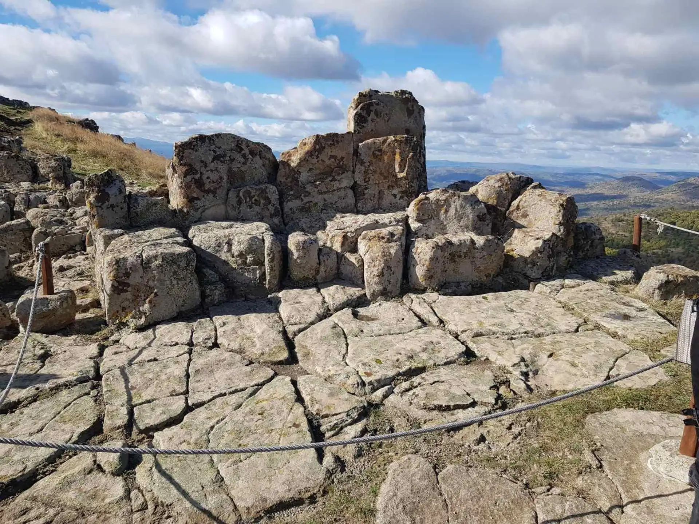

Get in touch
Contact & Tours
Questions about the site, or about a transfer and guided day trip from Skopje or Kumanovo — we answer both.
Direct channels
Talk to a person
This site deliberately has no contact form and collects nothing about you. Use whichever of these suits you — messages reach us fastest on WhatsApp or Viber.
Phone
WhatsApp & Viber
The site
Tatichev Kamen, Staro Nagorichane, North Macedonia — about 30 km from Kumanovo.
Day trip from Skopje
Roughly two hours each way, with up to three hours on the hill — enough to walk the whole audio guide without hurrying and still sit a while on the ridge.
On the way back we can stop for a traditional Macedonian lunch at Etno Selo Timchevski in the village of Vojnik: grilled meats, slow-cooked stews, bread out of the oven.
Tell us how many of you there are and roughly when, and we will come back with times and a price.
For an official guided visit to the site itself, arrangements are made with the National Museum — Kumanovo, which manages Kokino and provides expert guides to groups booking ahead.
Booking enquiry
Request the Kokino day trip
Tell us when you would like to go and how many of you there are. We reply with times and a price — nothing is charged until you confirm.